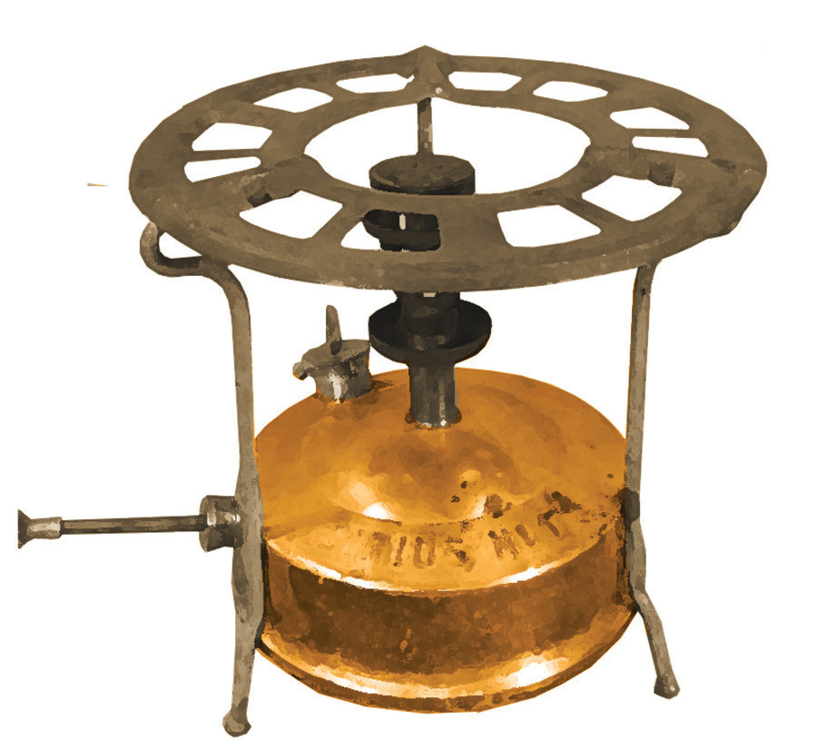

kuwekea mafuta lililounganishwa na vifaa vingine. Vifaa hivyo ni pamoja na kifaa kinachotumika kutoa mgandamizo wa hewa. Mgandamizo wa hewa husukuma mafuta ambayo hutoka kwa kasi kupitia tundu dogo la kupitishia mafuta.
Vilevile, jiko hilo hutumia sindano maalumu inayotumika kuzibua tundu la mafuta linapoziba. Kielelezo namba 3 kinaonesha jiko hilo ambalo huweza kulipuka iwapo halina mafuta ya kutosha.

Kielelezo namba 3: Jiko la mafuta ya taa linalotumia mgandamizo wa hewa
Jiko la mkaa
Jiko la mkaa hutumia mkaa ambao ukiwashwa hutoa moto. Jiko hili hutengenezwa kwa kutumia vifaa vinavyopatikana katika mazingira yetu kama bati, chuma, na udongo wa mfinyanzi. Majiko yaliyotengenezwa kwa udongo wa mfinyanzi hutumia kiasi kidogo cha mkaa. Udongo husaidia kuhifadhi joto ambalo hutumika kupikia chakula bila ya kutumia mkaa mwingi.
Sehemu za jiko la mkaa
Sehemu ya kuwekea mkaa ina matundu ambayo hupitisha majivu yanayotokana na kuungua kwa mkaa. Mlango na matundu hayo hupitisha gesi ya oksijeni inayosaidia mkaa kuwaka. Sehemu hii pia hutumika kutolea majivu yaliyopo katika jiko. Sehemu ya juu ina mafiga matatu yanayosaidia sufuria kukaa vizuri wakati wa kupika. Baadhi ya majiko ya mkaa yana sehemu ya tanuri au oveni. Sehemu hii hutumika kubanika, kuchoma au kupasha moto vyakula.